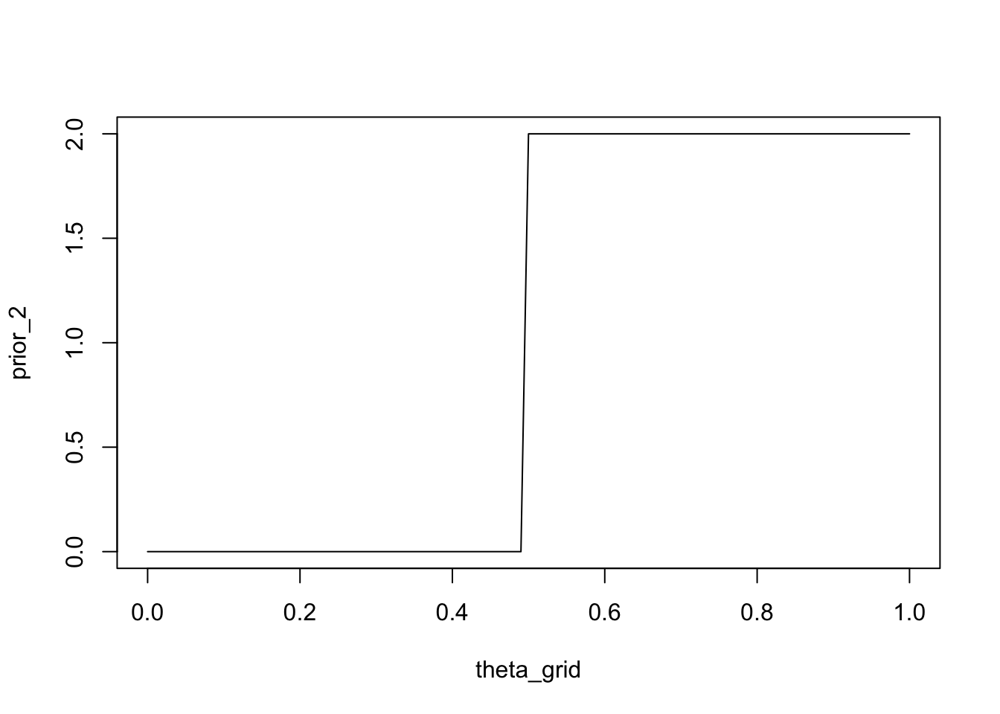
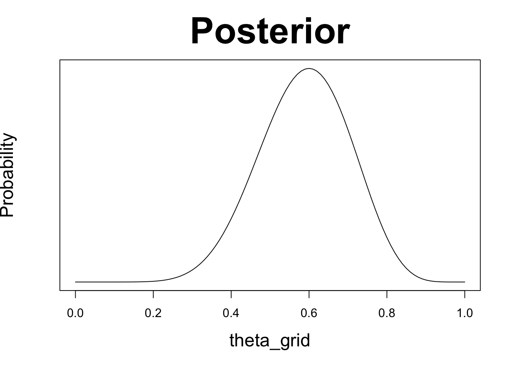
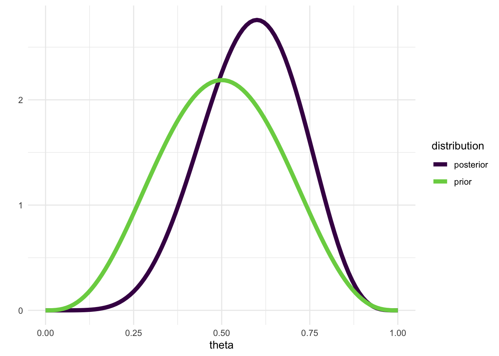

![]()
wins <- 6
games <- 9Einführung in die Bayesianische Statistik
Eine Alternative zu Null Hypothesis Significance Testing (NHST).
Lernziele
In der heutigen Sitzung:
- Einführung in die Bayesianische Inferenz
- Parameterschätzung vs Modelle vergleichen
Bayesian Inference (In A Nutshell)
“Probability theory is nothing more than common sense reduced to calculation.”
― Pierre Simon Laplace, 1819
In Bayesianischen Statistik geht es unter anderem, aber nicht nur, um die Anwendung von Bayes’ Theorem.
Der wesentlichste Unterschied zwischen der Bayesianischen und der frequentistischen Statistik ist, dass in der Bayesianischen Statistik die Wahrscheinkeitstheorie konsequent angewandt wird, um Parameter zu schätzen.
- In der frequentistischen Statistik wird die Wahrscheinkeitslehre vor allem angewandt, um die Wahrscheinlichkeit der Daten zu berechnen, unter der Annahme, dass die Nullhypothese wahr ist.
- In der Bayesianischen Statistik wird die Wahrscheinkeitslehre angewandt, um die Wahrscheinlichkeit der Parameter zu berechnen.
Dieser Unterschied hat weitreichende Konsequenzen. So kann man in der frequentistischen Statistik Parameter schätzen, aber es wird wird angenommen, dass ein Parameter einen wahren (aber unbekannten) Wert hat. Der Parameter ist aber keine Zufallszahl, und hat daher keine Wahrscheinlichkeitsverteilung. Daher darf man nicht über die Wahrscheinlichkeit eines Parameters sprechen. In der Bayesianischen Statistik ist ein Parameter eine Zufallszahl, und hat daher eine Wahrscheinlichkeitsverteilung. Wir benützen Bayes Theorem um die Wahrscheinlichkeit von Parametern zu berechnen.
Im foglenden Kapitel werden uns (in einer sehr verkürzten Form) damit beschäftigen, was die Konsequenzen dieser unterschiedlichen Sichtweisen sind, und wie Bayesianische Statistik funktioniert. Am Anfang müssen wir jedoch eine zentral Frage beantworten: Was ist eigentlich der Unterschied zwischen Parameterschätzung und Modellvergleichen / Hypothesentests?
In der frequentistischen Statistik werden diese beiden Dinge oft gemeinsam behandelt, und es ist nicht auf Anhieb klar, dass es sich um zwei unterschiedliche Dinge handelt. Dies hat vor allem damit zu tun, dass Parameterschätzung einfach ist, weil nur eine sogennante Punkschätzung erfolgt, und weil es oft um die Anwendung eines Hypothesentests geht.
In der Bayesianischen Statistik ist Parameterschätzung nicht einfach, da eine ganze Wahrscheinlichkeitsverteilung geschätzt wird. Es lohnt sich, dass wir uns klarmachen, was genau Parameterschätzung ist. Wir werden zuerst anhand eines t-Tests anschauen, wie Parameterschätzung und Hypothesentests im frequentistischen Gebrauch kombiniert werden und danach anhand eines einfachen Wahrscheinlichkeitsbeispiel die Parameterschätzung illustrieren.
Parameter schätzen vs Hypothesen testen anhand eines t-Tests
Mit einem t-Test wollen wir einen Mittelwertsunterschied testen. Dies bedeutet, wir wollen wissen, ob sich zwei Mittelwerte voneinander unterscheiden (wir beschränken uns hier auf zwei unabhängige Gruppen). Diese Frage bezieht sich auf einen Modellvergleich: Wir vergleichen ein Modell, in dem die Mittelwerte gleich sind, mit einem Modell, in dem die Mittelwerte unterschiedlich sind.
Bevor wir diesen Vergleich machen können, müssen wir jedoch die Mittelwerte schätzen. Dies ist eine Parameterschätzung. Im frequentistischen Ansatz benutzen wir den Stichprobenmittelwert als Schätzer für den Mittelwert, der in der Population, aus der diese Stichprobe gezogen wurde, gilt.
Wie funktioniert ein frequentistischer t-Test?
Wir schauen uns hier noch einmal explizit das Vorgehen und die Annahmen eines t-Tests an.Mehr dazu finden Sie bei Aufgabe 3.
Wir haben zwei Gruppen, und wollen wissen, ob sich die Mittelwerte der beiden Gruppen unterscheiden.
- Unser statistisches Modell lautet: Alle Beobachtungen innerhalb einer Gruppe \(j\) sind normalverteilt. Die beiden Gruppen unterschieden wich in ihrem Mittelwert, aber die Standardabweichung \(\sigma\) ist in beiden Gruppen dieselbe.
\[ y_{ij} \sim \mathcal{N}(\mu_j, \sigma^2) \]
\(y_{ij}\) ist die Beobachtung \(i\) in Gruppe \(j \in \{1, 2\}\). Wir interessieren uns für den Unterschied zwischen den Mittelwerten \(\mu_1\) und \(\mu_2\).
Wir schätzen die Gruppenmittelwerte mittels Maximum Likelihood Schätzung. In diesem Falle geht das ganz einfach; die Stichprobenmittelwerte sind Maximum Likelihood Schätzer, und können einfach berechnet werden. Der weitere Parameter wir ebenfalls geschätzt, und zwar als die gepoolte Standardabweichung \(s_p\). Dies ist der Parameterschätzung-Schritt.
Wir berechnen eine Test Statistik. Diese basiert auf dem Mittelwertsunterschied \(\mu_1 - \mu_2\).
\[ t = \frac{\bar{x_1} - \bar{x_2}}{s_p \sqrt{2/n}} \]
\(s_p \sqrt{2/n}\) ist der Standardfehler der Differenz \(\bar{x_1} - \bar{x_2}\). Unter der Annahme, dass die Nullhypothese gilt, folgt \(t\) einer Student-t Verteilung. Wir können nun berechnen, was die Wahrscheinlichkeit wäre, einen mindestens so extremen t-Wert zu erhalten. Diese Wahrscheinlichkeit nennt man den p-Wert. Wichtig: dies ist bereits ein Modellvergleich. Wir benutzen hier ein Modell, in dem die Mittelwerte gleich sind.
- Wir können uns nun entscheiden, ob wir die Nullhypothese verwerfen oder nicht. Wir vergleichen den p-Wert mit einem vorgegebenen Signifikanzniveau \(\alpha\). Wenn der p-Wert kleiner ist als \(\alpha\), dann verwerfen wir die Nullhypothese. Dies bedeutet, dass wir die Tatsache, dass der p-Wert “genügend” klein ist, als Evidenz gegen die Nullhypothese deuten.
Bayesianische Parameterschätzung
Wir werden nun einen anderen Ansatz kennenlernen: die Bayesianische Statistik. Dieser Ansatz ist nicht neu, hat aber erst in den letzten Jahren Verbreitung gefunden. Dies hat unter anderem damit zu tun, dass die Berechnungen, die für die Bayesianische Statistik nötig sind, erst mit der Verfügbarkeit von schnellen Computern möglich wurden.
Rechenleistung
Bayesianische Statistik braucht sehr viel Rechenleistung, da wir durch Anwendung von Bayes Theorem die Wahrscheinlichkeitsverteilungen von Parametern schätzen müssen. Für das nachfolgende Beispiel, in dem wir einen Parameter haben, ist dies einfach. Für komplexere Modelle, mit sehr vielen Parametern, brauchen wir Methoden wie Monte Carlo Sampling, welche sehr schnelle CPU und vor allem Parallelisierung benötigen.
Mittlerweile können diese Rechenoperationen auf Laptops durchgeführt werden. Dies war früher jedoch nicht der Fall; zu Zeiten, in denen die Bayesianische Statistik entwickelt wurde, war dies nur auf Grossrechnern möglich. Dies ist einer der Gründe, weshalb die Bayesianische Statistik erst in den letzten Jahren an Popularität gewonnen hat.
Wir werden nun anhand eines simplen Beispiels zuerst die Bayesianische Parameterschätzung kennenlernen. Ich verwende als Cover Story ein Kartenspiel, da dies ein einfaches Lehrbuchbeispiel ist. Die Cover Story selber ist jedoch nicht wichtig - es geht hier darum, dass unsere beobachteten Daten binär sind.
Weitere Beispiele für binäre Daten
- Eine Münze wird geworfen. Wir wollen die Wahrscheinlichkeit schätzen, dass Kopf oben liegt.
- Eine Schüler*in beantwortet Fragen in einer Prüfung. Wir wollen die Wahrscheinlichkeit schätzen, dass die Schüler*in eine Frage richtig beantwortet, um daraus etwas über die Fähigkeit der Schüler*in zu lernen.
- Wir untersuchen die Wahrnehmungsleistung einer Person, welche Signale in Rauschen entdecken soll. Wir wollen die Wahrscheinlichkeit schätzen, mit der die Person ein Signal korrekt entdeckt.
- Wir untersuchen Kaufentscheidungen. Wir wollen die Wahrscheinlichkeit unter verschiedenen Bedingungen schätzen, mit der eine Person ein Produkt anderen Produkten vorzieht.
Diese Beispiele haben also alle etwas gemeinsam: Wir haben eine binäre beobachtete Variable; dies bedeutet, die Variable nimmt einen von zwei möglichen Zuständen an. Wir definieren nun einen dieser Zustände als “Erfolg”, und wollen etwas über die Wahrscheinlichkeit eines Erfolgs lernen.
Zwei Spieler spielen ein Kartenspiel. Sie beobachten, dass sie 9 Spiele spielen und dass Spieler A 6 davon gewinnt. Jetzt möchten Sie die Wahrscheinlichkeit schätzen, dass Spieler A das nächste Spiel gewinnen wird. Anders ausgedrückt, möchten Sie die Fähigkeit von Spieler A einschätzen, Spieler B in diesem speziellen Spiel zu besiegen.
Sie wissen, dass die Erfolgswahrscheinlichkeit im Bereich \([0, 1]\) liegen muss. Was Ihnen vielleicht nicht bewusst ist, ist, dass Sie ein bestimmtes Wahrscheinlichkeitsmodell annehmen und die Erfolgswahrscheinlichkeit ein Parameter dieses Modells ist. Lassen Sie uns das genauer betrachten:
Wir wissen, dass die Anzahl der \(k\) Erfolge in \(n\) Spielen einer Binomialverteilung mit den Parametern \(n\) und \(\theta\) folgt. Wir nehmen an, dass jedes einzelne Spiel unabhängig von den anderen ist und die Erfolgswahrscheinlichkeit \(\theta\) für jedes Spiel gleich ist. Daher können wir auch jedes Kartenspiel als Bernoulli-Experiment mit dem Wahrscheinlichkeitsparameter \(\theta\) betrachten.
\[ y_i \sim \mathcal{Bernoulli}(\theta) \]
Ich werde im Allgemeinen die Notation \(y\) für eine Variable verwenden, die beobachtet wird, d.h. die Daten.
\(y_i\) ist die \(i\)-te Beobachtung in den Daten, was bedeutet, dass es uns sagt, ob Spieler A das Spiel im \(i\)-ten Versuch gewonnen hat oder nicht. \(\theta\) ist die Erfolgswahrscheinlichkeit für jedes einzelne Spiel; dies ist ein Parameter unseres Modells (\(\mathcal{M}\)).
Wenn wir frequentistisch vorgehen, müssen wir nun den Wert von \(\theta\) so schätzen, dass die Wahrscheinlichkeit, die Daten zu beobachten, maximiert wird.
:::{callout-info collapse=“true”} ## Maximum Likelihood Schätzer
Wenn wir beobachten, dass Spieler A 6 Mal in 9 Spielen gewonnen hat, dann ist die Erfolgswahrscheinlichkeit \(\theta = 6/9 = 0.67\). Dies ist der Maximum Likelihood Schätzer für \(\theta\). :::
Wir können dies auch mit in R numerisch, d.h. mit der “brute force” Methode, berechnen:
Das Ziel ist es, den “besten” Wert von \(\theta\) zu ermitteln, d.h. den Wert, der die Wahrscheinlichkeit maximiert, die Daten zu beobachten. Um dies zu tun, müssen wir eine Reihe von möglichen Werten von \(\theta\) in Betracht ziehen (wir wissen bereits, dass dieser Bereich \([0, 1]\) ist). Wir werden 101 Werte von \(\theta\) zwischen 0 und 1 betrachten und die Wahrscheinlichkeit berechnen, die Daten für jeden Wert von \(\theta\) zu beobachten.
n_points <- 101
theta_grid <- seq( from=0 , to=1 , length.out = n_points )Unter der Annahme, dass beide Spieler eine gleiche Gewinnchance haben, sollte der Parameter \(\theta = 0.5\) sein. Die Wahrscheinlichkeit der Daten gegeben \(\theta = 0.5\) ist:
dbinom(x = wins, size = games, prob = 0.5)[1] 0.1640625Die Wahrscheinlichkeit, 6 von 9 Spielen zu gewinnen, unter der Annahme, dass beide Spieler gleich wahrscheinlich gewinnen, ist 0.1640625.
Wir können auch die Wahrscheinlichkeit berechnen, dass A 6, 7, 8 oder 9 Spiele gewinnt, indem wir die kumulative Verteilungsfunktion der Binomialverteilung verwenden.
1 - pbinom(q = 5, size = games, prob = 0.5)[1] 0.2539063oder
pbinom(q = 5, size = games, prob = 0.5, lower.tail = FALSE)[1] 0.2539063
p-Wert
Kommt Ihnen das bekannt vor?
Wenn wir unsere Null-Hypothese quantifizieren wollen, dass beide Spieler gleich wahrscheinlich gewinnen, würden wir annehmen, dass \(\theta=0.5\). Die Berechnung der Wahrscheinlichkeit der Daten unter der Null ist genau das, was wir gerade getan haben. Dann setzen wir die tatsächlichen Daten ein, d.h. 6 von 9, und die obere Schwanzwahrscheinlichkeit ist der p-Wert. In diesem Fall ist der p-Wert ungefähr \(0.25\). Mit einem Schwellenwert von 0.05 würden wir die Nullhypothese nicht ablehnen und schliessen, dass es nicht genügend Beweise dafür gibt, dass Spieler A besser ist als Spieler B (dies ist ein einseitiger Test).
Nun berechnen wir die Wahrscheinlichkeit der Daten unter Berücksichtigung aller möglichen Parameterwerte. Dies ist der entscheidende Schritt in Richtung Bayesianische Inferenz 🚀.
In R ist dies sehr einfach, da alle Funktionen vektorisiert sind.
likelihood <- dbinom(wins , size = games , prob = theta_grid)Wir haben gerade die Wahrscheinlichkeit der Daten (genauer gesagt: A gewinnt 6 Mal in 9 Spielen) für jeden Wert von \(\theta\) berechnet (genauer: für 101 Werte von \(\theta\) zwischen 0 und 1). Wir können dies grafisch darstellen.
plot(theta_grid, likelihood, xlab = expression(theta), ylab = "likelihood")
lines(theta_grid, likelihood, type = "l", lty = 1)
Wir können in der obigen Abbildung sehen, dass die Wahrscheinlichkeit, die Daten zu beobachten, für viele Werte von \(\theta\) klein ist. Die Wahrscheinlichkeit, die Daten zu beobachten, oder die Likelihood, ist maximal für den Wert 0.6666667:
Diesen finden wir auch numerisch:
theta_grid[which.max(likelihood)][1] 0.67Was wir bisher gemacht haben, unterstreicht den Unterschied zwischen Parameterschätzung und Hypothesentest. Die Berechnung der Unter- und Überschreitungswahrscheinlichkeit unter der Nullhypothese (\(\theta=0.5\)) ist ein Hypothesentest, und die Schätzung von \(\theta\) ist die Parameterschätzung.
Vorwissen
die wahrscheinlichsten Parameter a priori gehabt hätten. Tatsächlich haben wir, wie wir etwas weiter unten sehen werden, implizit angenommen, dass alle Parameter gleich wahrscheinlich sind. Jetzt führen wir ein neues Konzept ein: eine a-priori-Verteilung für die Parameter, die wir versuchen zu schätzen1.
Wir werden dann diesen a-priori-Glauben verwenden, um einen a-posteriori-Glauben über die möglichen Parameterwerte zu erlangen. Um dies zu tun, müssen wir die a-priori-Wahrscheinlichkeit jedes Parameterwerts mit der Likelihood der Daten, d.h. mit der bedingten Wahrscheinlichkeit, die Daten zu beobachten, gegeben diesen Parameterwert, multiplizieren. Dies ist eine Anwendung des Bayes’schen Theorems:
\[ p(\theta|y) = \frac{ p(y|\theta) * p(\theta) } {p(y)} \]
Dies besagt, dass die a-posteriori-Wahrscheinlichkeit von \(\theta\) gegeben den beobachteten Daten \(y\) gleich ist der Wahrscheinlichkeit der Daten, multipliziert mit der a-priori-Wahrscheinlichkeit jedes Werts von \(\theta\). Sie können es sich so vorstellen: Jeder Parameterwert wird gewichtet, je nachdem, wie gut er die Daten vorhersagt. Das Produkt \(p(y|\theta) * p(\theta)\) wird dann durch die Wahrscheinlichkeit der Daten geteilt, die in diesem Fall über alle möglichen Parameterwerte summiert wird. Dieser Schritt dient dazu, die a-posteriori-Wahrscheinlichkeit zu normalisieren, so dass sie sich zu \(1\) aufaddiert. Dies verwandelt die unnormalisierte a-posteriori-Wahrscheinlichkeit im Grunde in eine richtige Wahrscheinlichkeitsverteilung.
\[ p(y) = \sum_{\theta}p(y|\theta) * p(\theta) \]
Wenn wir daran interessiert sind, die Parameter eines gegebenen Modells zu schätzen, können wir oft den (für ein Modell konstanten) normalisierenden Term \(p(y)\) vernachlässigen. Dieser Term, oft als Evidenz bezeichnet, spiegelt die Wahrscheinlichkeit der Daten wider, gemittelt über alle Parameterwerte. Ohne den normalisierenden Konstanten geschrieben, wird die Bayes-Regel oft so geschrieben:
\[ p(\theta|y) \propto p(y|\theta) * p(\theta) \]
Zusammenfassung
Repräsentieren Sie Ihre a-priori Überzeugung durch eine Wahrscheinlichkeitsverteilung über die möglichen Parameterwerte. Dies ist eine prinzipielle Methode, um mit Unsicherheit umzugehen.
Verwenden Sie die Likelihood, um die a-priori Überzeugung zu gewichten.
Erhalten Sie eine a-posteriori Überzeugung über die möglichen Parameterwerte.
Bayesianische Inferenz mit binären Daten: Ein numerisches Beispiel
Erinnern Sie sich daran, dass wir eine Sequenz von 101 Punkten zwischen 0 und 1 definiert haben, die die möglichen \(\theta\)-Werte darstellten.
n_points <- 101
theta_grid <- seq( from=0 , to=1 , length.out = n_points )Für jeden von diesen haben wir die Likelihood berechnet, das heißt die Wahrscheinlichkeit, die (festgelegten) Daten zu beobachten, gegeben den Parameter. Jetzt können wir unser Wissen über die Wahrscheinlichkeit jedes Parameterwerts explizit machen. Zunächst nehmen wir an, dass alle Parameter gleich wahrscheinlich sind. Wir weisen jedem Parameterwert die Wahrscheinlichkeit 1 zu. Dies ist unsere a-priori-Verteilung.
plot(theta_grid, prior_1, "type" = "l")
Wir könnten auch die Überzeugung ausdrücken, dass Spieler A mindestens so gut ist wie Spieler B, d.h. sie sind gleich gut oder A ist besser als B. Eine Möglichkeit, dies zu tun, besteht darin, Parameterwerten, die größer oder gleich \(0.5\) sind, eine Wahrscheinlichkeit von \(2\)2 zuzuweisen und den Wert \(0\) für Parameterwerte kleiner als \(0.5\).
prior_2 <- ifelse(theta_grid < 0.5, 0, 2)plot(theta_grid, prior_2, type = "l")
Eine systematischere Methode besteht darin, eine parametrisierte Wahrscheinlichkeitsverteilung zu verwenden, die unsere Überzeugungen über den Parameter ausdrückt.
Beta-Verteilung
Eine Familie von Wahrscheinlichkeitsverteilungen, die für Parameter geeignet sind, die im Intervall \([0,1]\) liegen, ist die Beta-Verteilung. Diese Verteilung hat \(2\) Parameter \(\alpha\) und \(\beta\), die jeweils als die vorherige Anzahl von Erfolgen und die Anzahl der Misserfolge interpretiert werden können. Die Anzahl der Versuche beträgt daher \(\alpha + \beta\). Die Grafik zeigt eine Reihe von möglichen Beta-Verteilungen für verschiedene Einstellungen von \(\alpha\) und \(\beta\). Beachten Sie, dass in R die Parameter \(\alpha\) und \(\beta\) als shape1 und shape2 bezeichnet werden.
── Attaching core tidyverse packages ──────────────────────── tidyverse 2.0.0 ──
✔ dplyr 1.1.2 ✔ readr 2.1.4
✔ forcats 1.0.0 ✔ stringr 1.5.0
✔ ggplot2 3.4.2 ✔ tibble 3.2.1
✔ lubridate 1.9.2 ✔ tidyr 1.3.0
✔ purrr 1.0.1
── Conflicts ────────────────────────────────────────── tidyverse_conflicts() ──
✖ dplyr::filter() masks stats::filter()
✖ dplyr::lag() masks stats::lag()
ℹ Use the conflicted package (<http://conflicted.r-lib.org/>) to force all conflicts to become errorsd |>
ggplot(aes(x = x, group = group)) +
geom_line(aes(y = dbeta(x, shape1 = shape1, shape2 = shape2)),
color = "steelblue4", linewidth = 1.1) +
scale_x_continuous(expression(theta), breaks = c(0, .5, 1)) +
coord_cartesian(ylim = c(0, 3)) +
labs(title = "Beta distributions",
y = expression(p(theta*"|"*a*", "*b))) +
theme(panel.grid = element_blank()) +
facet_grid(b~a)
Wenn wir eine Beta-Verteilung verwenden wollen, um die Überzeugung auszudrücken, dass alle Werte von \(\theta\) gleich wahrscheinlich sind (uniforme a-priori-Verteilung), können wir eine Beta-Verteilung mit \(\alpha = 1\) und \(\beta = 1\) verwenden.
prior_3 <- dbeta(x = theta_grid, shape1 = 1, shape2 = 1)plot(theta_grid, prior_3, type = "l")
Schliesslich könnten wir folgendes Vorwissen als Beta-Verteilung ausdrücken: Stellen Sie sich vor, Sie hätten zuvor 100 Spiele zwischen A und B beobachtet, und jeder hat die Hälfte der Spiele gewonnen. Sie können nun \(\alpha\) der Anzahl der von A gewonnenen Spiele und \(\beta\) der Anzahl der von B gewonnenen Spiele gleichsetzen. A hat 50 Spiele gewonnen und B hat 50 Spiele gewonnen:
prior <- dbeta(x = theta_grid, shape1 = 50, shape2 = 50)plot(theta_grid, prior, type = "l")
Nun können wir unser Vorwissen und die Wahrscheinlichkeit durch elementweises Multiplizieren kombinieren. Dies bedeutet wir müssen jeden Parameterwert mit der Wahrscheinlichkeit der Daten (gegeben diesen Parameter) multiplizieren.
Note
Zur Erinnerung: Bayes Theorem lautet:
\[ p(\theta|y) = \frac{ p(y|\theta) * p(\theta) } {p(y)} \]
In R ist dies einfach:
wins <- 6
games <- 9unstandardized_posterior <- likelihood * priorDies gibt uns die unnormalisierte Posterior-Verteilung.
\[ p(\theta|y) \propto p(y|\theta) * p(\theta) \]
Wir können diese normalisieren, indem wir sie durch die Summe der Werte teilen. Dies ist der Nenner von Bayes Theorem: \(p(y) = \sum_{\theta}p(y|\theta) * p(\theta)\).
In R können wir die sum() Funktion verwenden: sum(unstandardized_posterior).
posterior <- unstandardized_posterior / sum(unstandardized_posterior)Die normalisierte Posterior-Verteilung sieht folgendermassen aus.
plot(theta_grid, posterior, type = "l", yaxt = 'n', ylab = 'Probability',
main = "Posterior", cex.lab = 1.5, cex.main = 3)
Um dies wiederholbar zu machen, werden wir zwei Funktionen schreiben. Die erste, compute_posterior(), berechnet die Posterior-Verteilung, und gibt ein Dataframe zurück, welches Prior, Likelihood und Posterior enthält. Die zweite, plot_posterior(), plottet alle drei nebeneinander. Sie können auch die Maximum-Likelihood-Schätzung übergeben, z.B. 6/9, und diese wird ebenfalls geplottet.
compute_posterior = function(likelihood, prior){
# compute product of likelihood and prior
unstandardized_posterior <- likelihood * prior
# standardize the posterior, so it sums to 1
posterior <- unstandardized_posterior / sum(unstandardized_posterior)
out <- tibble(prior, likelihood, posterior)
out
}plot_posterior <- function(df, mle = 6/9){
with(df, {
par(mfrow=c(1, 3))
plot(theta_grid , prior, type="l", main="Prior", col = "dodgerblue3",
lwd = 4, yaxt = 'n', ylab = 'Probability', cex.lab = 1.5, cex.main = 3)
plot(theta_grid , likelihood, type = "l", main = "Likelihood", col = "firebrick3",
lwd = 4, yaxt = 'n', ylab = '', cex.lab = 1.5, cex.main = 3)
plot(theta_grid , posterior , type = "l", main = "Posterior", col = "darkorchid3",
lwd = 4, yaxt = 'n', ylab = '', cex.lab = 1.5, cex.main = 3)
abline(v = mle, col = 4, lty = 2, lwd = 2)
} )
}Jetzt können Sie verschiedene a-priori-Verteilungen ausprobieren und die Auswirkungen auf die a-posteriori-Verteilung beobachten.
Wir probieren zuerst eine uniforme a-priori-Verteilung aus:
df <- compute_posterior(likelihood, prior)plot_posterior(df)
Note
In diesem Fall stimmt die Maximum-Likelihood-Schätzung mit dem Wert überein, der die a-posteriori-Wahrscheinlichkeit maximiert. Dies ist der Fall, weil die Maximum-Likelihood-Schätzung nur die Likelihood verwendet und keine a priori-Kenntnisse berücksichtigt. Wenn wir eine uniforme a-priori-Verteilung verwenden, bedeutet das, dass alle Werte von \(\theta\) gleich wahrscheinlich sind. Mit anderen Worten haben wir keine Informationen darüber, welche Werte wahrscheinlicher sind.
Jetzt probieren wir die a-priori-Verteilung aus, die die Überzeugung ausdrückt, dass Spieler A nicht schlechter sein kann als Spieler B:
df <- compute_posterior(likelihood, prior)plot_posterior(df)
Die resultierende a-posteriori-Verteilung ist für alle Werte von \(\theta\), die kleiner als 0.5 sind, gleich Null. Dies liegt daran, dass unsere a-priori-Verteilung diesen Werten eine Wahrscheinlichkeit von Null zuweist.
Hands-on
Probieren Sie verschiedene a-priori-Verteilungen aus. Wie beeinflussen sie die a-posteriori-Verteilung?
- Eine a-priori-Verteilung, die den Glauben ausdrückt, dass B besser ist als A.
- Eine a-priori-Verteilung, die den Glauben ausdrückt, dass entweder A deutlich besser oder B deutlich besser ist.
- Eine a-priori-Verteilung, die den Glauben ausdrückt, dass die Spieler wahrscheinlich gleich gut sind und es unwahrscheinlich ist, dass einer viel besser ist als der andere.
Die a-posteriori-Verteilung repräsentiert unseren Glauben an die möglichen Parameterwerte, nachdem wir die Daten beobachtet haben. Man kann daher den bayesianische Inferenzprozess als eine Methode betrachten, um die Überzeugungen unter Berücksichtigung der beobachteten Daten zu aktualisieren. Dabei werden die Wahrscheinlichkeiten über die Parameterwerte neu verteilt, abhängig davon, wie gut diese Parameterwerte die Daten vorhersagten.
Analytische Lösung
Für einige Probleme ist es möglich, eine analytische Lösung zu finden. Die Likelihood Bernoulli/Binomial und der Beta-Prior gehören dazu.
In dem obigen Beispiel haben wir eine Technik namens Rasterapproximation verwendet, um die a-posteriori-Verteilung für einen Parameter zu erhalten. Das bedeutet, dass wir verschiedene Parameterwerte ausprobiert haben, indem wir ein Raster erstellt und dann die a-posteriori-Verteilung mit Hilfe der Bayes’schen Regel berechnet haben. Diese Technik wurde lediglich zu Bildungszwecken verwendet, da sie für reale Probleme nicht gut skalierbar ist. In dem einfachen Beispiel einer Abfolge binärer Beobachtungen ist der interessierende Parameter (die Erfolgswahrscheinlichkeit \(\theta\) bei einem Bernoulli-Versuch) zwischen \(0\) und \(1\) begrenzt (\(\theta \in [0, 1]\)). Darüber hinaus gibt es nur einen Parameter, der geschätzt werden soll. In komplexeren Modellen mit vielen Parametern kann die Verwendung der Rasterapproximation sehr ineffizient oder sogar unmöglich sein. In solchen Fällen verwenden wir in der Regel numerische Methoden, um die a-posteriori-Verteilung anzunähern. Diese Methoden werden allgemein als Monte-Carlo-Stichproben oder Markov-Chain-Monte-Carlo (MCMC) bezeichnet. Mit Hilfe von MCMC erhalten wir keine analytische Beschreibung der a-posteriori-Verteilungen, sondern eine Sammlung von Zufallszahlen (Stichproben), die aus der a-posteriori-Verteilung gezogen wurden. Wir verwenden diese Stichproben, um die a-posteriori-Verteilung darzustellen.
In diesem speziellen Fall erhalten wir jedoch die a-posteriori-Verteilung \(p(\theta|y)\) analytisch. Damit meine ich, dass, wenn wir eine Beta-Verteilung verwenden, um unseren a-priori-Glauben über den Parameter \(\theta\) zu beschreiben, und die Likelihood Bernoulli oder Binomial ist, die a-posteriori-Verteilung ebenfalls eine Beta-Verteilung ist.
Dies wird hier für die Binomial-Likelihood mit den Daten \(k\) Erfolgen in \(N\) Versuchen gezeigt.
\[ p(\theta|k, N) = \frac{p(y|\theta) \cdot p(\theta) = \theta^k (1-\theta)^{N-k} \cdot beta(\theta|a, b)}{p(k, N)} \]
wo \(a, b\) die Parameters der Beta-Verteilung sind.
\[ p(\theta|a, b) = beta(\theta|a, b) = \frac{\theta^{a-1} (1-\theta)^{b-1}} {B(a, b)} \]
Die Funktion \(B(a, b)\) ist eine Normalisierungskonstante und stellt sicher, dass die Fläche unter der Kurve zu \(1\) integriert.
\[ p(\theta|k, N) = \frac{\theta^{(a+k)-1} (1-\theta)^{(b+N-k)-1}} { B(a+k, b+N-k) } \]
Einfach ausgedrückt:
Tip
Wenn die a-priori-Verteilung \(beta(\theta|a, b)\) ist und die Daten \(k\) Erfolge in \(N\) Versuchen haben, dann ist die a-posteriori-Verteilung \(beta(\theta|a + k, b + N - k)\).
Sie können daher die Parameter \(a\) und \(b\) als die vorherigen Erfolge und Misserfolge in \(N\) Versuchen betrachten, und diese Parameter werden durch die Beobachtung von \(k\) Erfolgen in \(N\) Versuchen aktualisiert.
Beispiel
Diesmal verwenden wir theta_grid nur, um die a-priori-Verteilung und die a-posteriori-Verteilung darzustellen. Angenommen, wir haben 8 Spiele beobachtet und Spieler A hat 4 davon gewonnen. Unsere a-priori-Verteilung sollte daher \(p(\theta|4,4)\) sein.
prior <- dbeta(x = theta_grid, shape1 = 4, shape2 = 4)plot(theta_grid, prior, "l")
Wenn wir nun beobachten, dass Spieler A 3 von den nächsten 4 Spielen gewinnt, sollte unsere a-posteriori-Verteilung \(p(\theta|4+3,4+1)\) sein.
posterior <- dbeta(x = theta_grid, shape1 = 7, shape2 = 5)tibble(prior = prior,
posterior = posterior,
theta = theta_grid) |>
pivot_longer(c(prior, posterior), names_to = "distribution") |>
ggplot(aes(theta, value, color = distribution)) +
geom_line(size = 2) +
scale_color_viridis_d(end = 0.8) +
ylab("") +
theme_minimal()Warning: Using `size` aesthetic for lines was deprecated in ggplot2 3.4.0.
ℹ Please use `linewidth` instead.
Wir können eine Funktion schreiben, die einen Beta-Prior aktualisiert, gegeben \(k\) Erfolgen in \(N\) Versuchen:
posterior <- update_beta(a = 4, b = 4, k = 3, N = 4)tibble(prior = prior,
posterior = posterior,
theta = theta_grid) |>
pivot_longer(c(prior, posterior), names_to = "distribution") |>
ggplot(aes(theta, value, color = distribution)) +
geom_line(size = 2) +
scale_color_viridis_d(end = 0.8) +
ylab("") +
theme_minimal()
Posterior-Verteilung Zusammenfassen
Wir müssen jetzt noch einen letzten Schritt machen: Wir müssen die a-posteriori-Verteilung zusammenfassen. Dies können wir zum Beispiel tun, indem wir den Mittelwert und die Standardabweichung der a-posteriori-Verteilung berechnen.
Um zu zeigen, wie das funktioniert, können wir tausend Stichproben aus der a-posteriori-Verteilung ziehen. Zuerst werden wir eine a-posteriori-Verteilung erstellen.
df <- compute_posterior(likelihood, prior)plot_posterior(df)
Nun ziehen wir 1000 Zufallszahlen aus der a-posteriori-Verteilung.
D
n_samples <- 1e3
samples <- theta_grid |> sample(size = n_samples, replace = TRUE, prob = df$posterior)head(samples, 10) [1] 0.56 0.84 0.72 0.46 0.67 0.21 0.66 0.65 0.62 0.63Jetzt können wir die Zufallszahlen zusammenfassen, zum Beispiel durch Berechnung des Mittelwerts oder der Quantile.
mean(samples)[1] 0.63712Mit dem folgenden Code erhalten wir den Median und ein 50% credible interval, das heißt ein Intervall, das 50% der Verteilungsmasse enthält.
Wir können diesen Ansatz auch verwenden, um ein 95% credible interval zu berechnen.
Warning
Dies sollte nicht mit dem 95%-Konfidenzintervall verwechselt werden. Können Sie sich daran erinnern, wie ein Konfidenzintervall definiert ist? Was ist der Unterschied zwischen einem Konfidenzintervall und einem credible interval?
Was wir bisher gemacht haben, ist, die bayessche Inferenz für die Parameterschätzung in einem sehr einfachen Modell zu betrachten. Nennen wir dieses Modell \(\mathcal{M}\). Wir haben immer nur ein Modell betrachtet, aber im nächsten teil werden wir zwei oder mehrere Modelle \(\mathcal{M_j}\) betrachten, die sich in den a-priori-Verteilungen unterscheiden. Dann werden wir Methoden zur Modellvergleich untersuchen, um Hypothesentests in einem bayesianischen Framework durchzuführen.
Insbesondere werden wir uns ansehen, wie der bayesianischen Modellvergleich helfen kann, wenn wir keine signifikanten Ergebnisse haben.
Footnotes
In der frequentistischen Statistik ist das Konzept bedeutungslos - Parameter können keine Verteilung haben. In der Bayesschen Statistik sollte eine a-priori-Verteilung alles widerspiegeln, was wir über den Parameter wissen, bevor wir die Daten berücksichtigen. Die a-priori-Verteilung spiegelt unseren Glauben wider, der subjektiv oder objektiv sein kann.↩︎
2 damit die Fläche zwischen 0 und 1 sich zu 1 addiert.↩︎
Reuse
Citation
BibTeX citation:
@online{ellis2022,
author = {Ellis, Andrew},
title = {Einführung in Die {Bayesianische} {Statistik}},
date = {2022-05-08},
url = {https://kogpsy.github.io/neuroscicomplabFS23//pages/chapters/bayesian-statistics-2.html},
langid = {en}
}
For attribution, please cite this work as:
Ellis, Andrew. 2022. “Einführung in Die Bayesianische
Statistik.” May 8, 2022. https://kogpsy.github.io/neuroscicomplabFS23//pages/chapters/bayesian-statistics-2.html.